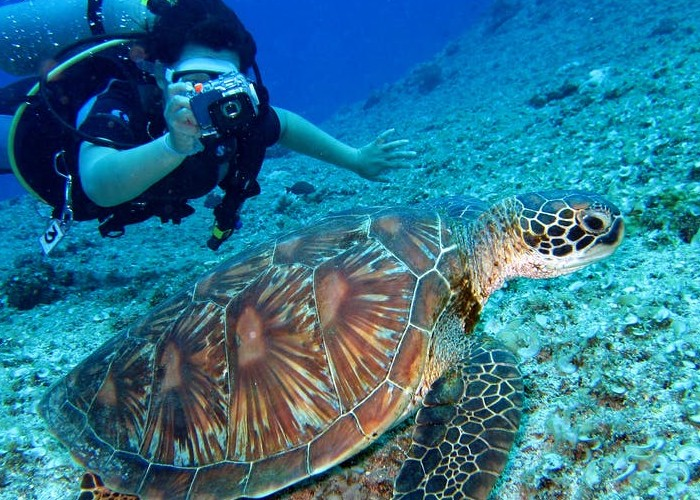

Welcome to Scoots Ride!
Cozumel
Cozumel (kōzə´mel), resort island, c.190 sq mi (490 sq km), Quintana Roo state, Mexico, in the Caribbean Sea off the E coast of the Yucatán peninsula. It is famed for its beaches and coral reef (declared a national park in 1996). The island was inhabited by the Maya before it was visited by Spanish explorer Fernández de Córdoba (1517) and by conquistador Hernán Cortes in 1519. Long a favored destination for sports diving, the island was not extensively developed for tourism until the 1960s. It is now a popular cruise and tourist destination; the mostly unpopulated northern shore and adjoining waters were declared a nature reserve in 2012. Cozumel suffered extensive damage from Hurricane Wilma in 2005.
Read More... 